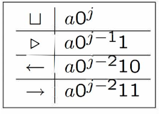
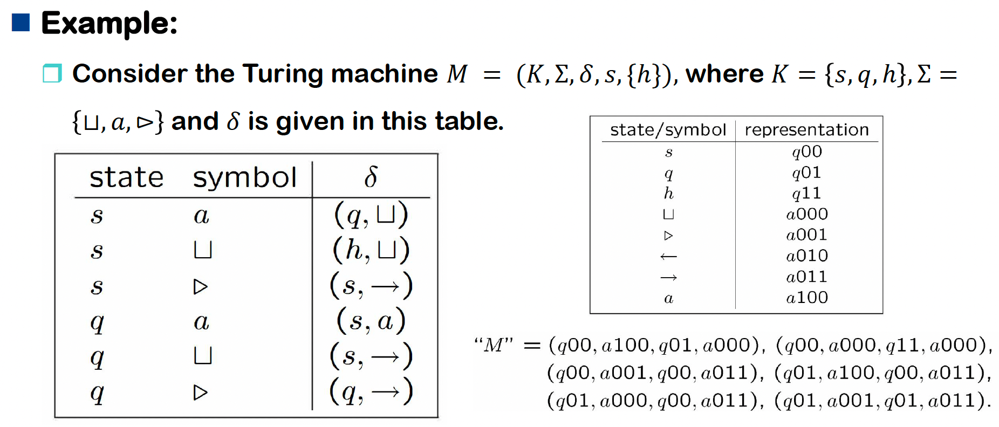
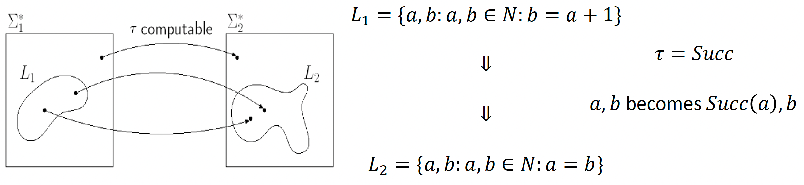
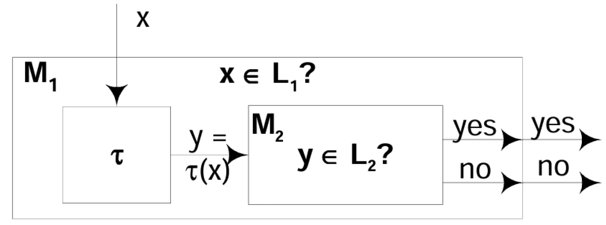
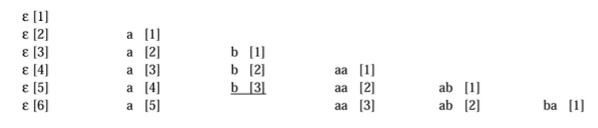
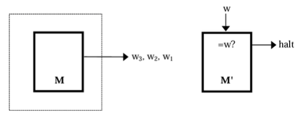
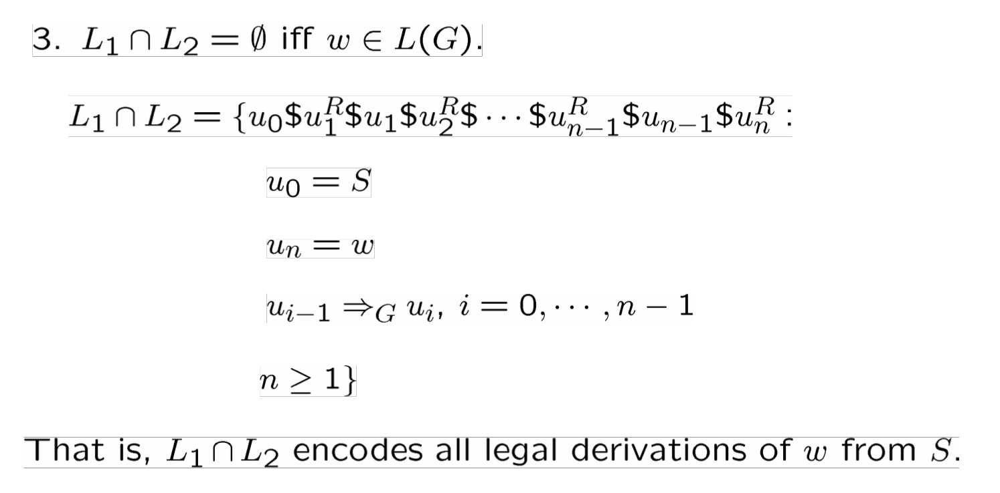
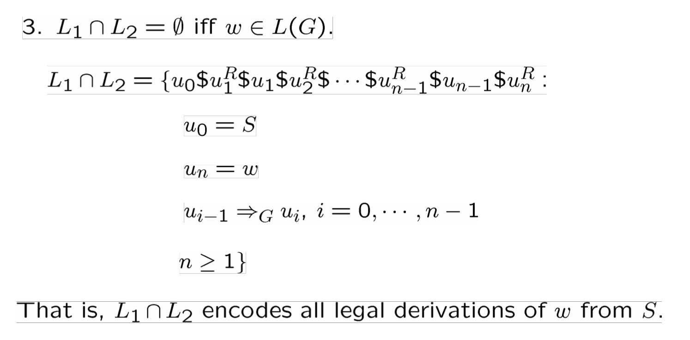

Undecidability¶
5.1 Church-Turing Thesis¶
Church-Turing Thesis
任何可以被图灵机表示并对所有输入停机的过程都可以被称为算法。
（目前还没被证明，也没有找到反例）
图灵机的数量是可数的，而所有自然问题/语言(\(\Sigma^*\)的子集)是不可数，因此存在大量问题是不可计算的，比如停机问题(halting probelm)。

5.2 Universal Turing Machines¶
Representation of Turing Machines¶
对于 \(\Sigma\cup \{\leftarrow,\rightarrow\}\) ，用二进制编码表示，记需要 \(j\) 位二进制编码，其中 \(\sqcup,\rhd,\leftarrow,\rightarrow\) 用固定的4个最小编码表示

对于状态，用 \(i\) 位二进制编码表示，其中 \(q0^i\) 表示开始状态。
对于图灵机 \(M\) 自身：
- 每一步转移关系都是一个四元组 \((q,a,p,b)\) : 当前状态q，当前符号a，转移到状态p，写入符号b
- 把所有4元组都编码成字符串，按照字典序排序，排序后的列表要以 \(\delta(a,\sqcup)\) 开头
- 如果图灵机的 \(H=\{y,n\}\) ，则约定 \(y\) 的字典序是最小的。

Universal Turing Machine¶
通用图灵机(Universal Turing Machine)能够模拟所有图灵机，对于一个通用图灵机 \(U\) ，在输入 \(M\) 和 \(w\) 时，应该与 \(M\) 输入 \(w\) 的输出相同，也需要满足相同的停机条件。
Design of U¶
构造一个3-tape图灵机 \(U'\) ， \(U\) 是可以模拟 \(U'\) 的标准图灵机。
- 对于输入 \(M,w\) ，把 \(M\) 放到第二个磁带， \(w\) 放到第一个磁带的左端， 输出结果写在第三个磁带。
- \(M\) 的一步计算的模拟过程为在第二个磁带中找到对应的四元组，根据四元组的指令更改第一个和第三个磁带。
- 重复上一步骤，直到第三个磁带中出现 \(h\)
5.3 The Halting Problem¶
假设有一个程序：halt(P,X)
- 如果程序
P可以在输入X时停止，则返回 yes - 如果程序
P在输入X上一直运行，则返回 no
此时定义一个函数
则diagnoal(diagnoal) 当且仅当 halt(diagonal,diagoal)=no 时停止，这是矛盾的。
不存在任何程序、任何算法可以正确判断任意程序是否停机。
记 \(H\) 是停机问题的格式化版本，则 \(H\) 是一个递归可枚举语言，因为通用图灵机可以 semidicides \(H(L(U)=H)\)
Theorem
记 \(H=\{^"M ^",^"w^":\text{TM } M\text{ halts on input string }w\}\) ，则语言 \(H\) 不是递归的，因此递归语言集合是递归可枚举语言的真子集。
Proof
构造 \(H_1=\{^"M ^":\text{TM } M\text{ halts on input string "M"}\}\) ，则如果存在TM \(M_0\) 可以决定 \(H\) ，就必然可以构造一个 TM \(M_1\) 来决定 \(H_1\) :
- 把输入磁带从 \(\rhd\sqcup\text{"M"}\underline{\sqcup}\) 转换成 \(\rhd\sqcup\text{"M""M"}\underline{\sqcup}\)
- 然后用 \(M_0\) 去模拟这个输入
因此如果 \(H\) 是递归的，那么 \(H_1\) 也是递归的。
又由于递归语言在补操作上是封闭的，可以得到 \(\overline{H_1}\) 也是递归的。
而 \(\overline{H_1}=\{\text{"M"}:M\text{ does not halt on input "M"}\}\) 不是一个RE，则必然不是一个递归语言，与假设矛盾，因此 \(H\) 不是递归语言。

Theorem
R.E.语言在补运算下不封闭。
Theorem
任何R.E.语言是递归的当且仅当 \(H\) 是递归的。
假设一个 TM \(M_0\) 可以决定 \(H\) ，则对于任何 TM \(M\) 半决定一个语言 \(L(M)\) ，都可以按照一下步骤设计一个 TM \(M'\) 来决定 \(L(M)\) ：
- 把输入磁带从 \(\rhd\sqcup w\underline{\sqcup}\) 转换成 \(\rhd\sqcup \text{"M""w"}\underline{\sqcup}\)
- 然后用 \(M_0\) 来模拟这个输入
Remark
- 所有 R.E. 语言都可以归约到 \(H\)
- \(H\) 是 RE-complete，即 \(H\) 是 R.E. 语言中最难的语言之一
5.4 Undecidable Problems about TM¶
- 任何算法都可以转化为对所有输入都会停机的图灵机。
- 不存在算法的问题称为不可判定(undecidable)问题或不可解(unsolvable)问题。
- \(H\) 不是递归的，最著名的不可判定问题被称为图灵机的停机问题。
Definition
记 \(L_1,L_2\subseteq \Sigma^*\) 是两个语言。从 \(L_1\) 到 \(L_2\) 的规约(reduction) 是一个递归函数 \(\tau:\Sigma^*\rightarrow \Sigma^*\) 满足 \(x\in L_1 \text{ iff } \tau(x)\in L_2\) 。

Theorem
如果 \(L_1\) 不是递归的，且存在一个 \(L_1\) 到 \(L_2\) 的规约，那么 \(L_2\) 也不是递归的。
Proof
假设 \(L_2\) 是递归的，可以被 TM \(M_2\) 计算，那么记 \(T\) 是计算递归函数 \(\tau\) 的TM，那么 \(TM_2\) 可以决定 \(L_1\) ，但是 \(L_1\) 不是递归的，矛盾。
Remark
如果存在 \(L_1\) 到 \(L_2\) 的规约，则：
- 如果 \(L_2\) 是可判定的，那么 \(L_1\) 也是可判定的
- 如果 \(L_1\) 是不可判定的，那么 \(L_2\) 也是不可判定的
Theorem
如果存在一个 \(L_1\) 到 \(L_2\) 的规约：
- \(L_2\) 是递归的 \(\rightarrow\) \(L_1\) 是递归的。
- \(L_1\) 不是递归的 \(\rightarrow\) \(L_2\) 不是递归的。

- \(L_2\) 是 R.E. \(\rightarrow\) \(L_1\) 是 R.E.
- \(L_1\) 不是 R.E. \(\rightarrow\) \(L_2\) 不是 R.E.

规约证明的关键元素：
- 清晰声明归约的“源”语言和“目标”语言，以及试图通过归约证明的内容。
- 描述如何基于假定的“目标”语言的机器和一个递归函数 \(\tau\) 来构建“源”语言的机器。
- 描述 \(\tau\) 函数的输入和输出。如果 𝜏 函数执行任何非平凡操作，最好论证它是递归的。
- 在这些证明中，机器图并非必要或充分条件。仅在需要时将其用作思维工具。
- 推演一遍逻辑，展示归约是如何判定“源”语言的。必须同时考虑接受和拒绝两种情况。
Theorem
以下关于 TM 的问题是不可判定的：
a) 给定一个 TM \(M\) 和一个输入 \(w\) ，\(M\) 是否在 \(w\) 上停止？ b) 给定一个 TM \(M\) ，\(M\) 是否在空磁带上停止？ c) 给定一个 TM \(M\) ，是否存在任何字符串使得 \(M\) 停止？ d) 给定一个 TM \(M\) ，\(M\) 是否在所有输入字符串都停止? e) 给定两个 TM \(M_1,M_2\) ，它们是否在相同的输入字符串停止？ f ) 给定一个 TM \(M\) ， \(M\) 半判定的语言正则吗？上下文无关吗？递归吗？ g) 存在一个特定的机器 \(M\) ，使得以下问题不可判定：给定 \(w\) ， \(M\) 在 \(w\) 上停止吗？
a) 给定一个 TM \(M\) 和一个输入 \(w\) ，\(M\) 是否在 \(w\) 上停止？¶
就是停机问题本身，不可判定。
b) 给定一个 TM \(M\) ，\(M\) 是否在空磁带上停止？¶
可以记为语言 \(L=\{\text{"M"}:M\text{ halts on }e\}\) ，则只需说明 \(H\) 可以规约到 \(L\) 。
构造一个 TM \(M_w\) ， \(M_w\) 把 \(w\) 写在空磁带上然后运行 \(M\) 。
构造递归函数 \(\tau:\text{"M""w"}\rightarrow M_w\)
则 \(H\) 可以规约到 \(L\)
c) 给定一个 TM \(M\) ，是否存在任何字符串使得 \(M\) 停止？¶
目标：证明 \(L=\{\text{"M"}:M\text{ halts on }e\}\) 可以规约到 \(L'=\{\text{"M"}:M\text{ halts on some input}\}\)
给定 "\(M\)" ，构造 "\(M'\)": 擦除所有输入然后在 \(e\) 上模拟 \(M\) $$ \begin{aligned} M' \text{ halt on some strings} &\Leftrightarrow M'\text{ halts on all strings}\ &\Leftrightarrow M \text{ halts on empty string} \end{aligned} $$
d) 给定一个 TM \(M\) ，\(M\) 是否在所有输入字符串都停止?¶
证明同 c)
e) 给定两个 TM \(M_1,M_2\) ，它们是否在相同的输入字符串停止？¶
- \(H=\{\text{"M"}|M \text{ halts on every input}\}\)
- \(L=\{^"M_1M_2^"|M_1\text{ and } M_2\text{ halt on the same input}\}\)
- \(f(^"M^")=\) the encoding of \(M'y\) and = {1. "\(y\)" is the the description of the machine that immediately accepts any input; 2. run \(M\) on \(x\) ; 3. if \(M\) halts, accept }
- \(^"M^" \in H\Rightarrow L(M'y)=\Sigma^*\Rightarrow f(^"M^") \in L\)
- \(^"M^" \notin H\Rightarrow L(M'y)=\phi\Rightarrow f(^"M^") \notin L\)
- \(H\leq L\)


5.5 Properties of Re. Languages¶
Theorem
\(L\) 是递归的当且仅当 \(L\) 和 \(\overline{L}\) 都是 R.E.。
Proof
如果 \(L\) 是递归的：
- \(L\) 是 R.E.
- \(\overline{L}\) 也是递归的因此 \(\overline{L}\) 是 R.E.
如果 \(L\) 和 \(\overline{L}\) 都是 R.E.：
- 对于一个输入字符串 \(w\) ，同时运行 \(L\) 和 \(\overline{L}\) 的判定机器。
- 由于 \(w\in L\) 或 \(w\in \overline{L}\) ，则必然有一个可以停下来。
Definition
定义图灵机 \(M\) enumerates 语言 \(L\) 当且仅当存在 \(M\) 的某些固定状态 \(q\) : $$ L={w:(s,\rhd\underline{\sqcup})\vdash_M(q,\rhd\underline{\sqcup}w)} $$ 一个语言是 Turing-enumerable 当且仅当存在一个图灵机可以enumerable 这个语言。
Theorem
一个语言是递归可枚举的当且仅当这个语言是 Turing-enumerable 的。
Proof
\(\Rightarrow\) 如果语言是递归可枚举的，则存在一个TM \(M\) 可以半决定 \(L\) ，此时需要构建一个TM \(M'\) enumerates \(L\) 。
首先枚举所有 \(L\) 的字母表可以生成的字符串，然后用 \(M'\) 使用dovetail（交错枚举）对所有字符串在 \(M\) 上模拟：
- \(w_0\) 执行一步
- \(w_0, w_1\) 各执行一步
- \(w_0, w_1, w_2\) 各执行一步
- ……

这样 \(M'\) 就可以枚举出 \(L\) 。
\(\Leftarrow\) 如果 \(M\) enumerates \(L\) ，需要说明 \(L\) 是 R.E.
构造一个 \(M'\) ，输入\(w\) 时，在空磁带上模拟 \(M\) ，每次枚举到一个停止的字符串，就和 \(w\) 进行对比，如果相等则停止，否则继续。

那么被 \(M'\) 可以半决定 \(L\) 。
Definition
\(M\) 时一个可以枚举语言 \(L\) 的图灵机。如果满足以下条件，则称 \(M\) 字典序枚举(lexicographically enumerates) \(L\) :
- 每当 \((q,\rhd \underline{\sqcup}w)\vdash^+_M(q,\rhd \underline{\sqcup}w')\) 时，需满足 \(w'\) 的字典序在 \(w\) 后面。
一个语言是字典序图灵可枚举的(lexicographically Turing enumerable) 当且仅当存在一个图灵机可以字典序枚举这个语言。
Theorem
一个语言是递归的当且仅当这个语言是字典序图灵可枚举的。
Proof
\(\Rightarrow\) 如果语言是递归的，则存在TM \(M\) 可以决定 \(L\) ，此时需要构造一个TM \(M'\) 可以字典序枚举 \(L\) 。
构造 \(M'\) 可以按照以下步骤模拟：
- 先在 \(L\) 的字母表上按照字典序生成字符串。
- 然后用这些字符串作为输入运行 \(M\) ，如果 \(M\) 接受则把这个字符串放到输出磁带上，如果拒绝的话则继续模拟下一个字符串。
则 \(M'\) 可以执行计算 \((q,\rhd \underline{\sqcup}w)\vdash^+_M(q,\rhd \underline{\sqcup}w')\)
\(\Leftarrow\) 如果一个TM \(M\) 可以字典序枚举 \(L\) 。
此时有两种情况：
- \(L\) 是有限的，此时不需要证明，语言一定是递归的（同时是上下文无关的、正则的）
- \(L\) 是无限的，此时可以构造TM \(M'\) ：在输入 \(w\) 时，开始枚举机器 \(M\) ，直到 \(w\) 被找到或者出现了字典序大于 \(w\) 的字符串，两种情况分别对应接受和拒绝。由于字典序小于 \(w\) 的字符串数量一定时有限的，则接受和拒绝一定会发生。

Rice Theorem¶
定义索引(index)为一个TM \(M\) 的编码 "M" ，同时 "M" 也是 R.E. set \(L(M)\) 的索引。
定义索引集(index set) 是一个 R.E. sets 的 collection 的索引集合，即如果 \(C\) 是一个R.E. sets的集合，则 \(F(C)=\{^"M^":L(M)\in C\}\)
Thoerem
如果 \(S\) 是一类递归可枚举语言满足 \(F(S)\) 不是空的也不是所有索引的集合，则 \(F(S)\) 是不可判定的。
Proof
使用从停机问题的规约来证明。
记 \(S\) 是一个 R.E 语言的不平凡(no-trivial)类:
- 存在一个 R.E. 语言 \(A\in S\) ，则 \(F(S)\neq \phi\)
- 存在一个 R.E. 语言 \(B\notin S\) ，则 \(F(S)\neq \text{alll indices}\)
假设 \(F(S)\) 是可判定的，则存在一个图灵机 \(H\) 可以在输入 \(i\) (一个索引) 时，可以判定 \(L_i\in S\) 是否成立。
记 \(M_A\) 和 \(M_B\) 时分别可以接受 \(A\) 和 \(B\) 的图灵机，对于任意图灵机 \(M\) 和输入 \(w\) ，都可以构造一个新的图灵机 \(M'\) ：输入 \(x\) 时
- 以“交替执行”（dovetailing）的方式同时模拟 \(M(w)\) 和 \(M_B(x)\)。
- 如果 \(M(w)\) 停机，则停止对 \(M_B(x)\) 的模拟，取而代之地墨子 \(M_A(x)\) 。接受 \(x\) 当且仅当 \(M_A(x)\) 接受。
- 如果 \(M(w)\) 永远不停机，则持续模拟 \(M_B(x)\) 。接受 \(x\) 当且仅当 \(M_B(x)\) 接受。
则
- 如果 \(M\) 在 \(w\) 上停止，则 \(M'\) 的表现等同于 \(M_A\) ，因此 \(L(M')=A\in S\)
- 如果 \(M\) 在 \(w\) 上不停止，则 \(M'\) 的表现等同于 \(M_B\) ，因此 \(L(M')=B\notin S\)
因此 \(M\) 在 \(w\) 上停止当且仅当 \(L(M')\in S\) 。
如果 \(F(S)\) 被 \(H\) 判定，则在输入 \(M'\) 的索引时， \(H\) 可以决定 \(L(M')\in S\) 是否成立，但是这个等价于决定 \(M\) 在 \(w\) 上是否停机。因此，需要判定停机问题，这是不可能的，假设不成立。
因此 \(F(S)\) 是不可判定的。
5.6 More unsolvable problems¶
Thoerem
给定一个语法 \(G\) 和任意字符串 \(w\) ，不存在一个算法可以判定 \(w\in L(G)\) 是否成立。
Proof
假设存在一个算法可以解决这个问题，则可以用这个算法解决停机问题：
- 给定 \(M\) 和 \(w\) ，为判定 \(M\) 在输入 \(w\) 时是否终止，等价于构建一个语法 \(G\) 满足 \(L(M)=L(G)\) ，判断 \(w\in L(G)\)
Thoerem
给定两个上下文无关语法 \(G_1\) 和 \(G_2\) ，决定 \(L(G_1)\cap L(G_2)=\phi\) 是否成立时不可解决的。
Proof
这个问题可以规约到决定问题：给定一个字符串 \(w\) 和一个通用语法 \(G\) ， \(w\in L(G)\) 是否成立
则需要构造一个可计算函数: \(w;G\rightarrow G_1;G_2\)

 

Tilling¶